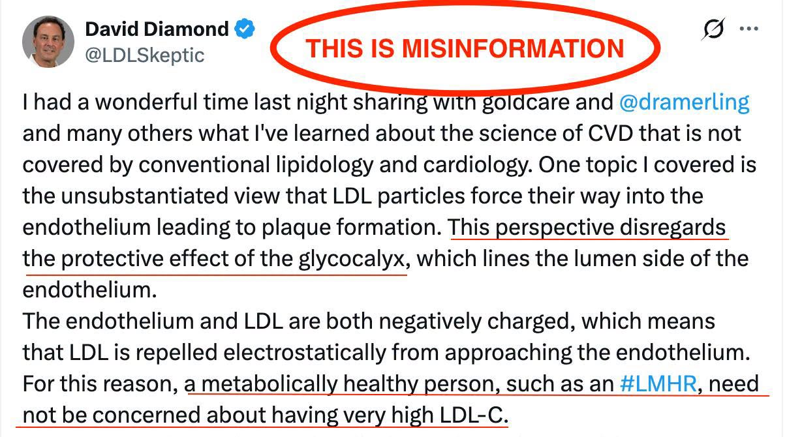

A nice discussion of how the glycocalyx and endothelium help protect against CVD, and the limits of that protection.
#glycocalyxHD #endotheliumHD #cholesteroldeniersHD #daviddiamondHD
A shared post rebuts the argument, popular among keto and carnivore advocates, that metabolically healthy people with very high LDL/apoB are shielded by their endothelial glycocalyx. It explains what the glycocalyx is and why its protection has limits. Louis recommends it as a good discussion of the endothelium and its limits in protecting against CVD.
A nice discussion of how the glycocalyx and endothelium help protect against CVD, and the limits of that protection.
#glycocalyxHD #endotheliumHD #cholesteroldeniersHD #daviddiamondHD
DOES A HEALTHY GLYCOCALYX PROTECT YOU FROM HIGH LDL/apoB?
There's a popular argument circulating, especially among advocates of ketogenic and carnivore diets, that people who are metabolically healthy don't need to worry much about extremely elevated LDL/apoB because their endothelial glycocalyx protects them from atherosclerosis.
But there's a pretty important problem with this argument that I rarely see discussed.
First, what is the glycocalyx?
It's a thin, gel-like layer that covers the inner surface of our blood vessels, helping regulate vascular function and acting as a protective barrier between circulating blood components, including LDL and other apoB-containing particles, and the endothelial cells lining our arteries.
It's clearly important for cardiovascular health, but here's what I think many people are overlooking.
THE GLYCOCALYX IS NOT UNIFORMLY PROTECTIVE THROUGHOUT THE ARTERIAL TREE, EVEN UNDER OTHERWISE HEALTHY CONDITIONS.
At bifurcations and curvatures, especially in major arteries prone to plaque development, blood flow is disturbed, and this can contribute to significant local thinning and altered barrier properties of the glycocalyx, even in the absence of other major metabolic risk factors.
For sure, factors like high blood pressure, smoking, diabetes, etc. can worsen glycocalyx dysfunction, but these regional differences can still occur without those issues being present.
In other words, however healthy a person is, they still have arterial branches and curves where disturbed flow can create localized vulnerabilities. Diabetes, smoking, high blood pressure, etc. can worsen this, but aren't required for these regional differences to occur.
And importantly, evidence that certain things can support glycocalyx health in general doesn't prove they can fully protect or restore it in these specifically vulnerable regions.
Here are some examples of what I'm talking about:
A 2006 study by Van den Berg et al. showed that mice fed a normal diet had an approximately 82% thinner glycocalyx at the carotid sinus compared with the common carotid artery, along with greater intimal thickening.
Paper · Am J Physiol Heart Circ Physiol · 2006Atherogenic region and diet diminish glycocalyx dimension and increase intima-to-media ratios at murine carotid artery bifurcation.It was hypothesized that endothelial glycocalyx perturbation contributes to increased vulnerability of the arterial wall exposed to atherogenic risk factors. Glycocalyx and intima-to-media ratios (IMR) were studied at a low- and a high-risk region within the murine carotid artery (common region) and internal carotid branch (sinus region) in control C57BL/6J (C57BL6) and age-matched C57BL/6J/apoE*3-Leiden (apoE*3; on…pubmed.ncbi.nlm.nih.govIn a 2009 study, the same researchers also showed that impaired glycocalyx barrier properties at this location were associated with TWO TO THREEFOLD GREATER LDL ACCUMULATION within the arterial intima.
Paper · Pflugers Arch · 2009Impaired glycocalyx barrier properties contribute to enhanced intimal low-density lipoprotein accumulation at the carotid artery bifurcation in mice.The glycocalyx contributes to the barrier properties of vascular endothelium, and recently, we reported using electron microscopy that glycocalyx is diminished at lesion prone sites in arterial bifurcations in mice. In the present study, we examined using confocal microscopy the dimension and composition of the endothelial glycocalyx at low- and high-risk atherogenic regions within the common carotid (common) and…pubmed.ncbi.nlm.nih.govThink about the implications of that.
Even under otherwise normal conditions, there can be substantial regional differences in glycocalyx structure and protection. This helps explain why atherosclerosis tends to develop where it does in the body: the combination of disturbed flow and enhanced LDL entry and accumulation.
And importantly, while we cannot eliminate all arterial branch points and disturbed flow, we CAN substantially reduce circulating LDL/apoB.
NOTE: I fully acknowledge these are animal studies, and we cannot automatically assume identical findings in humans. But the underlying relationship between disturbed blood flow, endothelial function, and atherosclerosis-prone arterial regions is well established in human vascular biology too.
So yes, there is little doubt that impaired glycocalyx barrier function can help increase LDL entry and accumulation, but the point is that maintaining good metabolic health does not necessarily eliminate these localized vulnerabilities.
There is still very good reason to live in ways that support the glycocalyx and endothelium, because this is far better than not doing so. And, of course, if needed, we CAN control very effectively the circulating concentration of LDL/apoB-containing particles available to enter the arterial wall in the first place.
People like David Diamond cannot simply invoke the negative electrical charge of LDL particles and the glycocalyx to then conclude that no LDL will enter the arterial wall if someone is metabolically healthy, or that metabolically healthy people with extremely elevated LDL/apoB have nothing to worry about. That's simply not how it works in real life.
To support that conclusion, you'd need convincing evidence demonstrating that specifically at branch points and curves of major arteries, the glycocalyx maintains sufficiently effective barrier function to prevent clinically meaningful LDL entry and accumulation in metabolically healthy individuals, even when LDL/apoB levels are extremely elevated.
As far as I know, there is no convincing evidence establishing that.
So in effect, David is doing a classic thing here: taking a mechanism and applying it to real life without evidence showing his conclusions are actually true, and with plenty of evidence arguing against his conclusion. It's a very common technique among biased internet influencers with a specific narrative to push.
MY BOTTOM LINE:
Supporting a healthy glycocalyx is absolutely worthwhile. So is maintaining excellent metabolic health.
But neither will automatically make elevated LDL/apoB harmless.
We should be exploring ALL the ways we can protect our arteries, not using one potentially protective mechanism to dismiss another well-established causal factor in cardiovascular disease.
Otherwise, we risk giving people a very misleading sense of security.


Louis says an influencer's post misstates a UK Biobank study: it is an observational analysis associating higher HDL with lower ASCVD risk at any given LDL/ApoB, which dozens of earlier studies already showed. He links his own post on what the paper actually says.
A shared post rebuts a claim that LDL research is incomplete and flawed. It cites over 200 prospective cohort, genetic and randomized studies involving over 2 million participants, 20 million person-years and 150,000+ cardiovascular events that consistently show a dose-dependent LDL-ASCVD relationship. It also addresses the U-shaped curve claim and Mendelian randomization.

Louis quotes a Barbell Medicine explanation that low cholesterol in sick, older people reflects disease lowering cholesterol, not the reverse. Genetically low LDL lowers heart disease with normal cancer risk and lifespan, and lowering LDL on purpose cuts heart risk proportionally. The small diabetes risk is concentrated in people already near the metabolic edge.

Louis notes that major AI tools like Gemini accurately captured the truth on cholesterol and statins in a fact-check, and encourages members to use them.

Louis comments on a publicly released health memo: LDL 53 mg/dL on rosuvastatin and ezetimibe despite good metabolic markers, with CT angiography plaque tracking and vaccinations up to date. He uses it to illustrate appropriate CVD treatment versus health misinformation and asks that politics be kept out.
Louis shares a video from Viva Longevity that investigates viral claims by Dr. Aseem Malhotra about heart disease, cholesterol and mRNA vaccines, adding a dismissive comment. The post itself contains no evidence beyond the linked video.